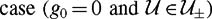

|
| |||||||||||||
|
|
||
Let V be a neighborhood of a point (i.e., an n-dimensional open set of containing x). Let RV (x, T) indicate the set of reachable points at time T by trajectories remaining inside V and satisfying equation (12.6), and let
We define the following four versions of nonlinear controllability (see figure 12.11):
The system is controllable from x if, for any , there exists a T > 0 such that . In other words, any goal state is reachable from x in finite time.
The system is accessible from x if contains a full n-dimensional subset of for some T > 0. See figure 12.11(a).
The system is small-time locally accessible (STLA) from x if RV (x, ≤ T) contains a full n-dimensional subset of for all neighborhoods V and all T > 0. See figure 12.11(b).
The system is small-time locally controllable (STLC) from x if RV (x, ≤ T) contains a neighborhood of x for all neighborhoods V and all T > 0. See figure 12.11(c).
The phrase "small-time" indicates that the property holds for any time T > 0, and "locally" indicates that the property holds for arbitrarily small (but full-dimensional) wiggle room around the initial state. For practical systems, it might take finite time to switch between controls (e.g., putting a car in reverse gear). In this case, we might say a system is locally, but not small-time, controllable. Here we ignore the switch time and retain the standard "small-time locally" terms.
If a property holds for all , the phrase "from x" can be eliminated. Figure 12.12 shows the implications among the properties. If the vector fields are all analytic, then accessibility implies STLA.
Small-time local controllability is of special interest. STLC implies that the system can locally maneuver in any direction, and if the system is STLC at all , then the system can follow any curve on arbitrarily closely. This allows the system to maneuver through cluttered spaces, since any motion of a system with no motion constraints can be approximated by a system that is STLC everywhere. Also, if is connected, then the system is controllable if it is STLC everywhere.
STLA and STLC are local concepts that can be established by looking at the behavior of the system in a neighborhood of a state. Accessibility and controllability, on the other hand, are global concepts. As a result, they may depend on things such as the topology of the space and nonlocal behavior of the system vector fields.
Some physical examples of the various properties:
Imagine setting the minute and hour hands on a watch by turning a knob that can spin in only one direction. The configuration space of the hands is one-dimensional, since the motion of the hour hand is coupled to the motion of the minute hand. Show that this system is accessible, controllable, and STLA on the configuration space, but not STLC.
Consider the system on described by the drift vector field g0 = [x22, 0]T and the single control vector field g1 = [0, 1]T, where u = u1 ∊ [−1, 1]. Show that the system is accessible and STLA from any x but neither controllable nor STLC.
Consider the system on described by the drift vector field g0 = [x2, 0]T and the single control vector field g1 = [0, 1]T, where u = u1 ∊ [−1, 1]. This is the linear double-integrator written in the first-order form . Convince yourself that the system is STLC only from zero-velocity states [*, 0]T (see figure 12.13).
Figure 12.13: Two initial states and neighborhoods for the linear double-integrator with bounded control. The reachable sets from each initial state, by trajectories remaining in the neighborhood, are shaded, and example trajectories are shown. The system is STLC from the initial state where , but not STLC from the initial state where  . Reaching a point left of this initial state (i.e., decreasing the x1 value) requires to become negative—the x2 coordinate must leave the neighborhood.
. Reaching a point left of this initial state (i.e., decreasing the x1 value) requires to become negative—the x2 coordinate must leave the neighborhood.
The unicycle satisfies all the controllability properties if .
Show that the unicycle is accessible, STLA, and controllable in the obstacle-free plane, but not STLC, if belongs to the class but not .
Any system confined to a k-dimensional integral manifold, k < n, satisfies none of the controllability properties.
As hinted at in the linear double-integrator example, for second-order systems with velocity variables in the state vector, STLC can only hold at zero velocity. States with nonzero velocity result in drift in the configuration variables that cannot be instantaneously compensated by finite actuation forces. Therefore, when we talk about STLC for second-order systems, we implicitly mean STLC at zero velocity.
For linear systems of the form , there is a single notion of controllability (see appendix J). For nonlinear systems, such as those we study, there are a number of notions of controllability, including the four we have defined here. Akey point is that the linearizations of systems of interest to us are generally not controllable, meaning that their controllability is inherently a nonlinear phenomenon.
Of the controllability properties, STLA can be checked by studying the Lie algebra of the vector fields g0, …, gm.
The system (12.6) is STLA from x if (and only if for analytic vector fields) it satisfies the Lie algebra rank condition (LARC)—the Lie algebra of the vector fields, evaluated at x, is the tangent space at x, or  . This holds for any . If the system is symmetric (drift-free and ), then the LARC also implies small-time local controllability.
. This holds for any . If the system is symmetric (drift-free and ), then the LARC also implies small-time local controllability.
An early version of this result is due to W.-L. Chow [112], and it is sometimes called Chow's theorem.
As shown previously, the rank of the unicycle Lie algebra is three at all states, so the LARC is satisfied. Therefore, for both and , the unicycle is STLA. For a control set , the system is also STLC everywhere, and therefore controllable because of the connectedness of its state manifold. It is also true that the unicycle is controllable (but not STLC) for any , though this cannot be shown by theorem 12.3.1. (The reader may wish to verify controllability by describing a constructive procedure to drive the unicycle to any goal location in an obstacle-free space.)
If we eliminate one vector field from the unicycle example, allowing it only to roll forward and backward (guni1) or spin in place (guni2), the unicycle is confined to an integral curve of the vector field, and none of the controllability properties is satisfied.
Second-order systems with nonzero drift, such as the PBWT, are not symmetric for any control set. The system may still be STLC at zero velocity states, however, since symmetry plus the LARC is sufficient but not necessary for STLC. Sussmann [401] provided a more general sufficient condition for STLC that includes the symmetric ) as a special case. To understand it, we first define a Lie product term to be a bad bracket if the drift term g0 appears an odd number of times in the product and each control vector field gi, i = 1 … m, appears an even number of times (including zero). A good bracket is any Lie product that is not bad. For example, [g1, [g0, g1]] is a bad bracket and [g2, [g1, [g0, g1]]] and [g1, [g2, [g1, g2]]] are good brackets. With these definitions, we can state a version of Sussmann's theorem:
The system (12.6) is STLC at x if
g0(x) = 0,
the LARC is satisfied by good Lie bracket terms up to degree k, and
any bad bracket of degree j ≤ k can be expressed as a linear combination of good brackets of degree less than j.
The intuition behind the theorem is the following. Bad brackets are called bad because, after generating the net motion obtained by following the Lie bracket motion prescription, we find that the controls ui only appear in the net motion with even exponents, meaning that the vector field can only be followed in one direction. In this sense, a bad bracket is similar to a drift field, and we must be able to compensate for it. Since motions in Lie product directions of high degree are essentially "slower" than those in directions with a lower degree, we should only try to compensate for bad bracket motions by good bracket motions of lower degree. If a bad bracket of degree j can be expressed as a linear combination of good brackets of degree less than j, the good brackets are said to neutralize the bad bracket. For the bad bracket of degree 1 (the drift vector field g0) there are no lower degree brackets that can be used to neutralize it, so we require g0(x) = 0. Therefore, this result only holds at states x where the drift vanishes, i.e., equilibrium states.
Assume that the PBWT moves in a horizontal plane, so ag = 0. As before, we define gpbwt3 = [gpbwt0, g1pbwt], gpbwt4 = [gpbwt0, gpbwt2], gpbwt5 = [gpbwt1, [gpbwt0, gpbwt2]], and gpbwt6 = [gpbwt0, [gpbwt1, [gpbwt0, gpbwt2]]]. Again as before, a computation shows that
The LARC is satisfied, so the system is STLA at all states for either control set. If , we would like to know if the system satisfies Sussmann's sufficient condition for STLC at equilibrium states x = [q1, q2, q3, 0, 0, 0]T, where gpbwt0(x) = 0. Because we use bracket terms up to degree 4 to demonstrate LARC, we must be able to neutralize all bad bracket terms of degree 4 or less. The only such bad bracket terms are the degree 3 terms

The second term is neutralized by gpbwt1. Therefore, by Sussmann's theorem, the system is STLC at equilibrium states.
Note that in gravity, ag ≠ 0, so gpbwt0(x) ≠ 0 at any state and Sussmann's theorem does not allow us to prove or disprove STLC.
Now consider the case where the PBWT is equipped with a single thruster. If the single thruster corresponds to the vector field gpbwt1, the thrust always passes through the body center of mass, and the angular velocity of the body cannot be changed. The system is not accessible. If the single thruster corresponds to the vector field gpbwt2, however, we can define the vector fields
and see that the determinant of the matrix formed by these columns is −16d8, indicating that the system is STLA for either or . Bad brackets cannot be neutralized, so theorem 12.3.3 cannot be used to show STLC. Note, however, that reducing to a single control vector field does not reduce the dimension of the reachable space, as it did for the kinematic unicycle case. This is because the second-order system provides a drift field with which Lie bracket terms can be generated.
Finally, the PBWT with the single control vector field gpbwt2, a control set , and ag = 0 turns out to be (globally) controllable — any state is reachable in finite time from any other state [303]. Thus the PBWT in zero gravity provides a simple example of different controllability properties (figure 12.14). If we equip it with three independent control vector fields, e.g., a control for each coordinate, the PBWT is a linear system of three double-integrators and it is controllable by linear control theory (see appendix J). If we equip it with the two control vector fields gpbwt1 and gpbwt2, it is no longer linearly controllable, but remains STLC at zero velocity. If we equip it with just the single control vector field gpbwt2, it is no longer STLC at zero velocity, but remains STLA and globally controllable.
For kinematic systems that are STLC everywhere on a connected manifold, (global) controllability follows easily. In general, however, controllability is not easy to decide, as it may depend on nonlocal features of the control system. In the special case of a control system (12.6) with  and a drift vector field that repeatedly returns the system to a neighborhood of its initial state, however, demonstrating controllability is as easy as demonstrating the LARC.
and a drift vector field that repeatedly returns the system to a neighborhood of its initial state, however, demonstrating controllability is as easy as demonstrating the LARC.
First, some definitions. Consider the flow φg0 of the drift vector field. A point is called positively Poisson stable (PPS) for g0 if for all T > 0 and any neighborhood V of x, there exists a time t > T such that the flow of the vector field returns the system to V, i.e., φg0T(x) ∊ V. The drift vector field g0 is called positively Poisson stable if the set of PPS points for g0 is dense in  .
.
A point is called a nonwandering point of g0 if for all time T > 0 and any neighborhood V of x there exists a time t > T such that φg0T(V) ∩ V ≠ , where φg0T(V) ={φg0T (x) | x ∊ V}.(A positively Poisson stable point is necessarily a nonwandering point.) The nonwandering set of g0 is the set of all nonwandering points of g0. Finally, we say that the drift vector field g0 is weakly positively Poisson stable (WPPS) if its nonwandering set is .
We now state the main theorem, taken from Lian, Wang, and Fu [289]. Related results can be found in (Jurdjevic and Sussmann [212]; Lobry [295]; Brockett [65]; Bonnard [58]; and Jurdjevic [211]).
Assume that the drift vector field g0 is WPPS. Then the system (12.6) with is controllable on  if the LARC is satisfied.
if the LARC is satisfied.
As an example, consider the system on described by where and g1(x) = [1, 0]T. The drift vector field (shown in figure 12.15) is WPPS, as its orbits are closed. We find that and , so the LARC is satisfied at all x. By theorem 12.3.5, every state is reachable from every other state. Intuitively, u1 is used to control x1 and (waiting) time is used to "control" x2. (In fact, in this example, it is not hard to see that controllability also holds for . This system is only STLC at the origin.
THEOREM 12.3.5 is a powerful tool for establishing the global controllability of systems with drift. Systems with periodic natural unforced dynamics (such as an undamped planar pendulum or the example of figure 12.15) or energy-conserving drift on compact configuration spaces are examples of systems with WPPS drift vector fields. The latter follows from an application of Poincaré's recurrence theorem; see, e.g., the discussion by Arnold [26]. As an example, a rotating satellite moves on the compact configuration space SO(3), and its natural unforced motion conserves energy. Therefore, the drift is WPPS. The LARC can be satisfied by a single body- fixed control torque, meaning that the satellite can be driven to any orientation and angular velocity with a single control vector field.
For systems with non-WPPS drift, it may be possible to construct feedback laws that always keep the system in a periodic orbit. If the system is always controllable about these periodic trajectories, i.e., if the system can reach neighborhoods of the controlled periodic trajectories, then similar reasoning can be used to demonstrate controllability of the system [87,304].
|
|
||
|